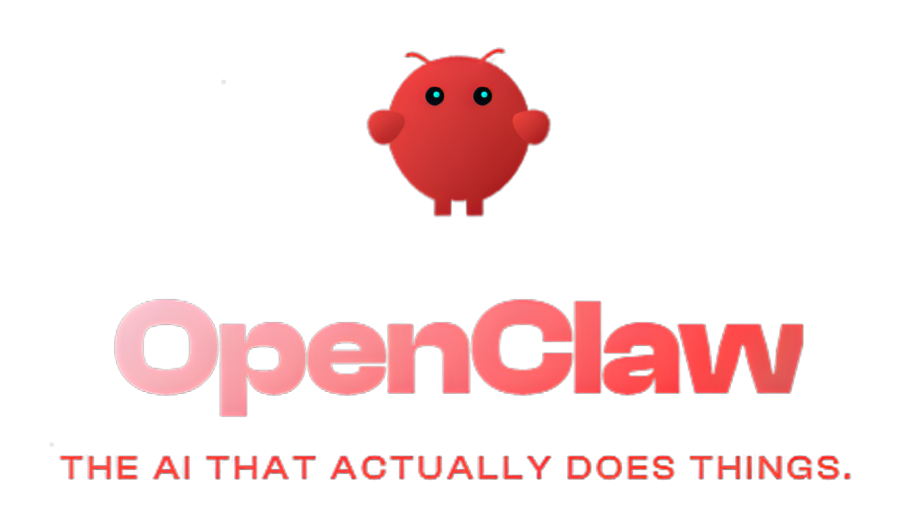
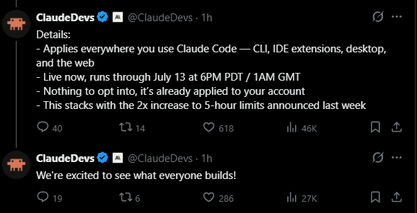
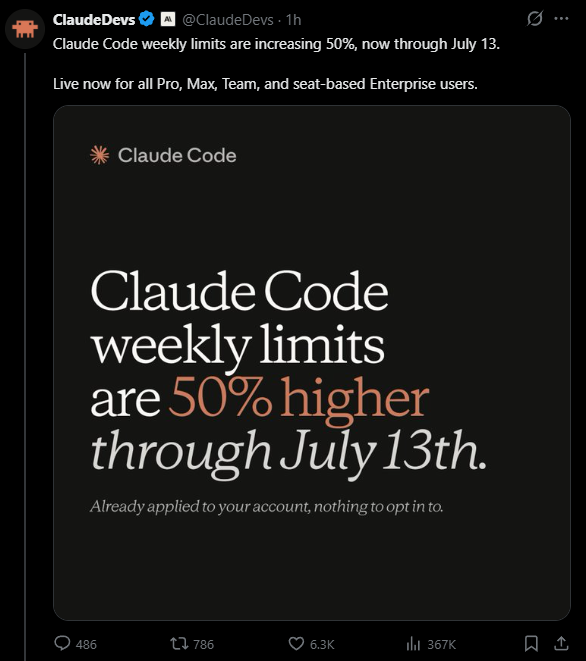

CLAUDE PLAN
JUST SPLIT IN TWO
JUST SPLIT IN TWO
JUNE 15 · $20–$200 PROGRAMMATIC CREDIT
ANTHROPIC · JUNE 15
Anthropic just
opened the gates.
opened the gates.

OpenClaw WAS BANNED · NOW PERMITTED
Banned third-party agents
now permitted.
New credit pool.


UNTIL JUNE 15 · AFTER JUNE 15
Pre-June 15: agents were locked out. Now: in.
OpenClaw
WAS BANNED
Archon
GRAY ZONE
Your scripts
COUNTED VS PLAN
BEFORE
OpenClaw: BANNED. Archon: GRAY ZONE. Your scripts: count vs plan.
AFTER
All Agent SDK tools: one credit pool. Separate from IDE.
The catch:
The new credit pool is small. $20 on Pro burns fast.
The new credit pool is small. $20 on Pro burns fast.
HERE'S THE MATH
PRO
$20/MONTH
MAX 5×
$100/MONTH
MAX 20×
$200/MONTH
TEAM / ENT
$20–$200/MONTH
FREE PLAN
NOT INVITED
THE ROLLOUT
TODAY
Nothing changes.
No action required
JUNE 8
Paid users emailed.
Claim link arrives
JUNE 15
Programmatic credit goes into effect.
Across every Agent SDK surface
THE CATCH
$0
ON PRO · PROGRAMMATIC CREDIT
FEW HUNDRED SDK CALLS
BURNS FAST
EXTRA USAGE ON
Flow to standard API rates per token
EXTRA USAGE OFF
Every SDK request hard-stops until next month
SEPARATELY
Claude Code weekly limits +50% through July 13
BUILDERS ARE SPLIT
HAPPY
"Third-party agents finally allowed on the plan. No more juggling separate API keys."
SKEPTICAL
"Twenty bucks on Pro won't last builders running real Agent SDK loops. The cap matters."
CONFUSED
"What counts as programmatic versus interactive? Hooks? Sub-agents? The line isn't clear."
NET UPSIDE FOR MOST
TWO BUDGETS
Programmatic separate. IDE budget protected.
BUT
ONE QUESTION
Is the ceiling tall enough for what you actually run?
The cap size decides which one you are.
CLAUDE PLAN
NOW SPLIT IN TWO.
NOW SPLIT IN TWO.
JUNE 15 · $20–$200 PROGRAMMATIC CREDIT
Twenty bucks of programmatic credit on Pro — generous, or just enough rope?
Subscribe→